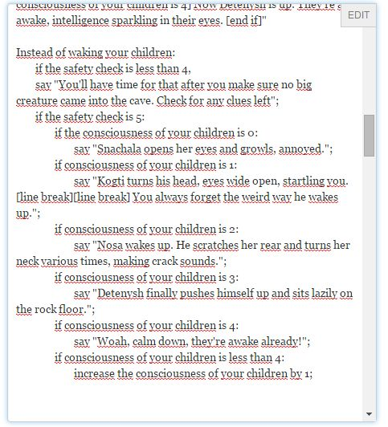

The answer this question is related to was meant to solve a problem of mine.
Actually, the answer I got was helpful... for future cases, and I'm sure it was the best I answer I'd get so I gave him the honor(?).
But right now, this code keeps failing.
I have the same error I had in the first question:
I type a verb, the safety check to changes to 5 and displays a message, then I type 'wake children', getting a "Snachala opens her eyes and growls, annoyed.". Then I happily send that command again. Nothing happens.
From there on, the only answer I get is my own helpless command standing atop nothing.
wake children
"Snachala opens her eyes and growls, annoyed."
wake children
wake children
etc.
This is the code:
Safety check is a number that varies. Safety check is 4.
Your children is an animal in your cave.
Things have a number called consciousness. The consciousness of a thing is usually 0. Your children has consciousness 0.
Every turn rule:
if consciousness of your children is 4,
move your children to the location of the player;
if safety check is 4,
say "Today you must show your children once again the way to the river and teach them where can they eat where they cannot. Gotta wake them up and head outside.";
increase safety check by one;
Instead of waking your children:
if the safety check is less than 4,
say "You'll have time for that after you make sure no big creature came into the cave. Check for any clues left";
if the safety check is 5:
if the consciousness of your children is 0:
say "Snachala opens her eyes and growls, annoyed.";
if consciousness of your children is 1:
say "Kogti turns his head, eyes wide open, startling you.[line break][line break] You always forget the weird way he wakes up.";
if consciousness of your children is 2:
say "Nosa wakes up. He scratches her rear and turns her neck various times, making crack sounds.";
if consciousness of your children is 3:
say "Detenysh finally pushes himself up and sits lazily on the rock floor.";
if consciousness of your children is 4:
say "Woah, calm down, they're awake already!";
if consciousness of your children is less than 4:
increase the consciousness of your children by 1;
If this code plays perfectly on your program, I'll asume it's a playfic.com problem.
P.S.: And I swear to god I typed the tabs. They don't seem to display here.
It actually looks like this:
